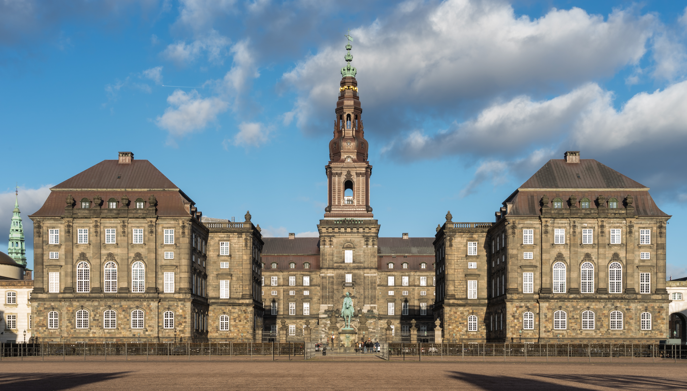
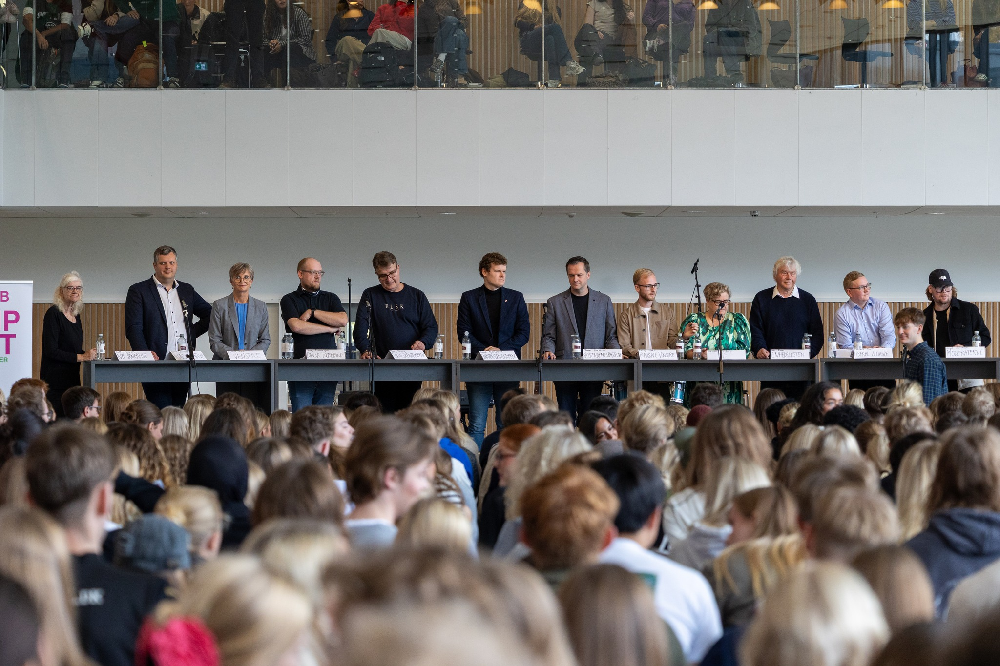
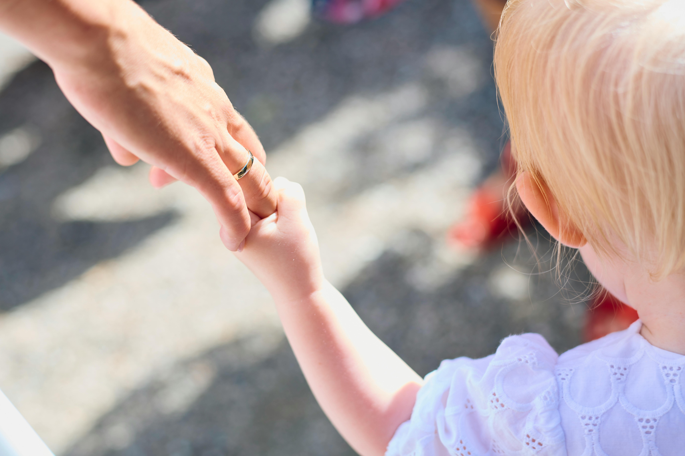
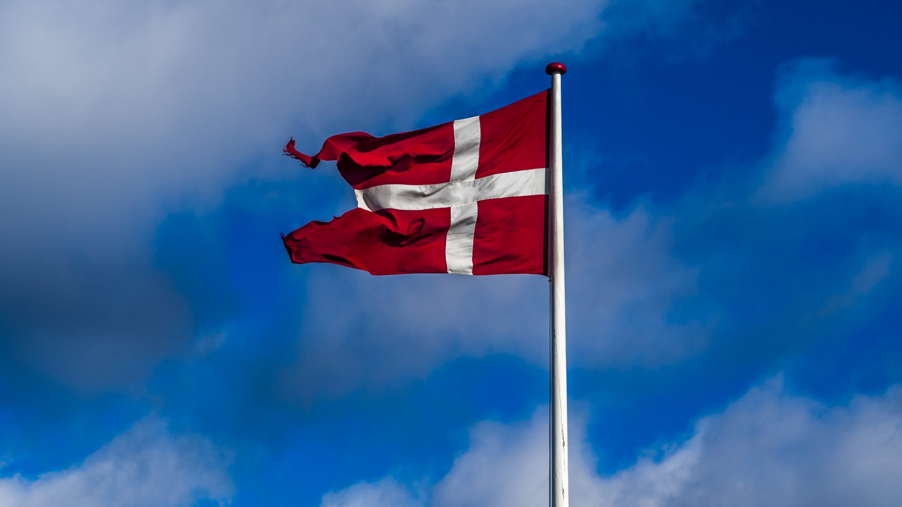
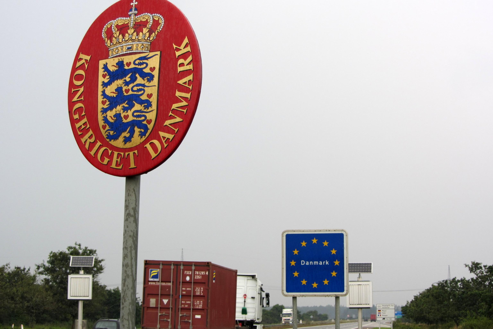
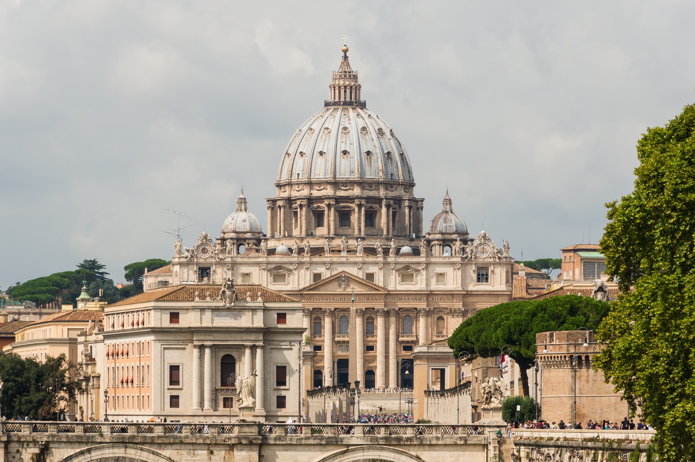
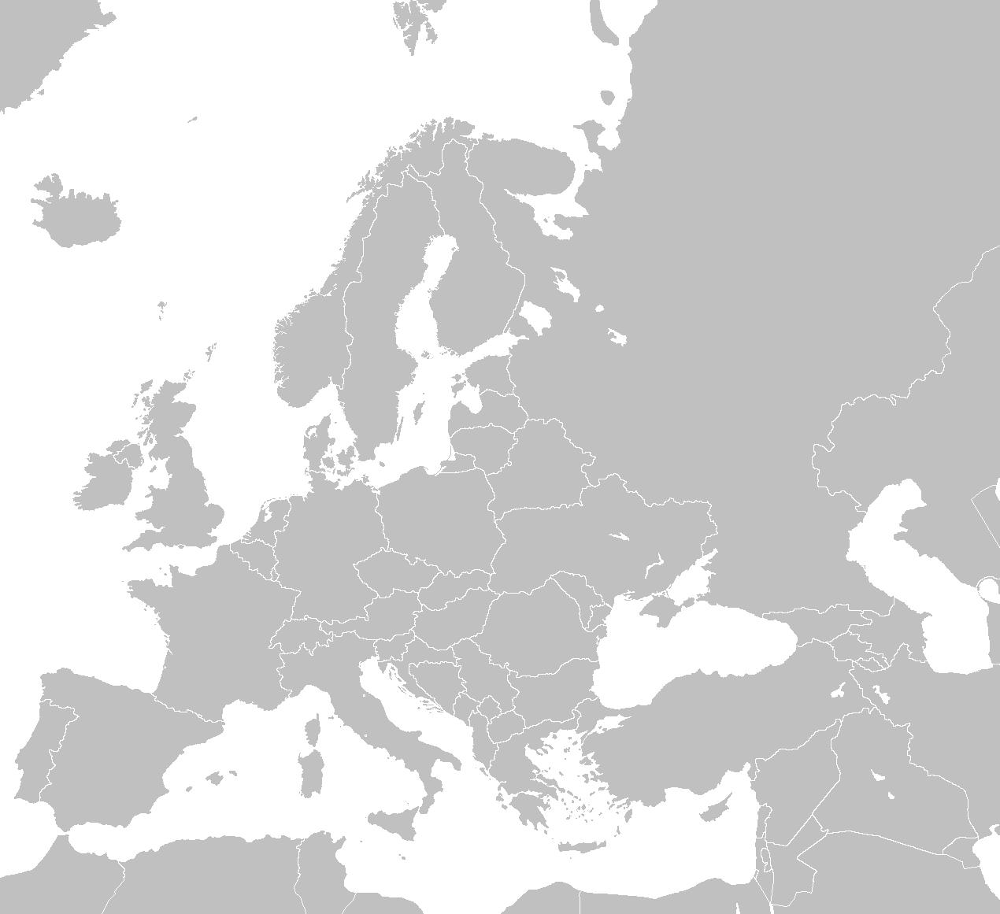
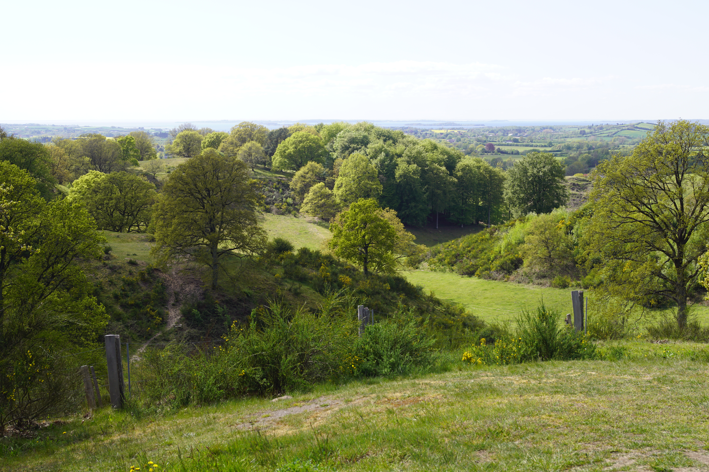

Familie. Kultur. Ansvar.
Et Danmark med rødder, retning og ansvar.
Statskonservative arbejder for et samfund, hvor familien styrkes, kulturen bæres videre, og staten igen tager sit ansvar for fællesskab, tryghed og sammenhængskraft alvorligt.
Om Statskonservative
Et parti for et samfund med form, grænser og fælles ansvar.
Statskonservative bygger på idéen om, at et land ikke bare er et system, en økonomi eller et neutralt område på et kort. Et land er et historisk, kulturelt og moralsk fællesskab, som er blevet formet over generationer.
Vi ønsker et Danmark, hvor frihed lever sammen med orden, hvor velfærd hænger sammen med pligt, og hvor kultur, familie og fælles normer igen bliver taget alvorligt som grundlaget for et sundt samfund.


Mærkesager
Vores politiske hovedlinje

Økonomi og velfærdsstat
En stærk velfærdsstat kræver ansvar, arbejde og orden i økonomien. Rettigheder skal hænge sammen med pligter.
Læs mere
Nation, kultur og identitet
Danmark er mere end administration. Danmark er et historisk, kulturelt og sprogligt fællesskab.
Læs mere
Immigration, ulovlig immigration og integration
Danmark skal have kontrol over sine grænser, og integration skal være et reelt krav.
Læs mere
Religion, kristendom og stat
Kristendommen er en del af Danmarks historiske og moralske grundlag.
Læs mereFamilie, sociale normer og synet på det progressive
Familien er samfundets første fællesskab og bør styrkes, ikke opløses.
Læs mere
EU, suverænitet og international politik
Samarbejde mellem lande kan være nødvendigt, men beslutninger bør ligge tæt på nationerne.
Læs mereGlobalisering
Globalisering må ikke gøre Danmark afhængigt, rodløst eller politisk magtesløst.
Læs mereYtringsfrihed, autoritet og orden
Et frit samfund kræver ytringsfrihed, men også autoritet, lov og orden.
Læs mere
Klima, miljø og ansvar
Naturen skal beskyttes, men klimapolitik skal være realistisk og ansvarlig.
Læs mere“Et stærkt samfund er ikke kun rigt. Det er rodfæstet, ansvarligt, kulturelt sammenhængende og i stand til at styre sin egen fremtid.”Aleksander Terek
Tilmeld dig
Bliv en del af Statskonservative
Her kan du skrive dig op, hvis du ønsker at følge projektet, høre mere om medlemskab eller blive kontaktet om aktiviteter og lokal opbygning.
Bemærk: Når du tilmelder dig, behandler vi dine oplysninger for at kunne kontakte dig om Statskonservative. En tilmelding til et politisk projekt kan være en følsom oplysning, fordi den kan sige noget om politisk interesse. Du kan altid trække dit samtykke tilbage ved at skrive til kontakt@statskonservative.dk.